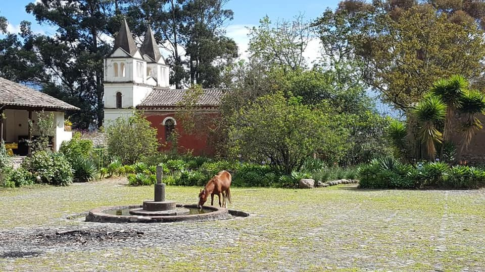
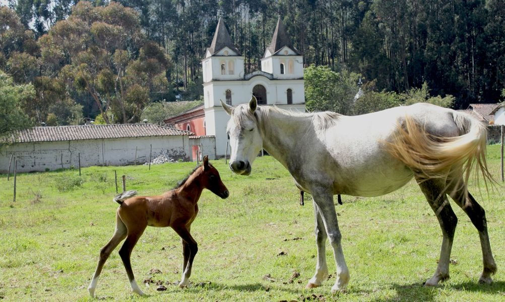
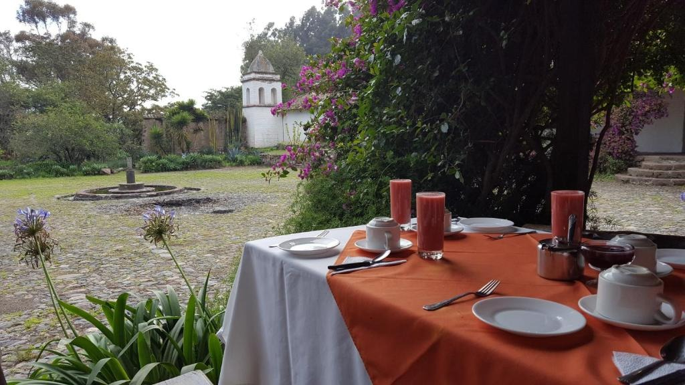
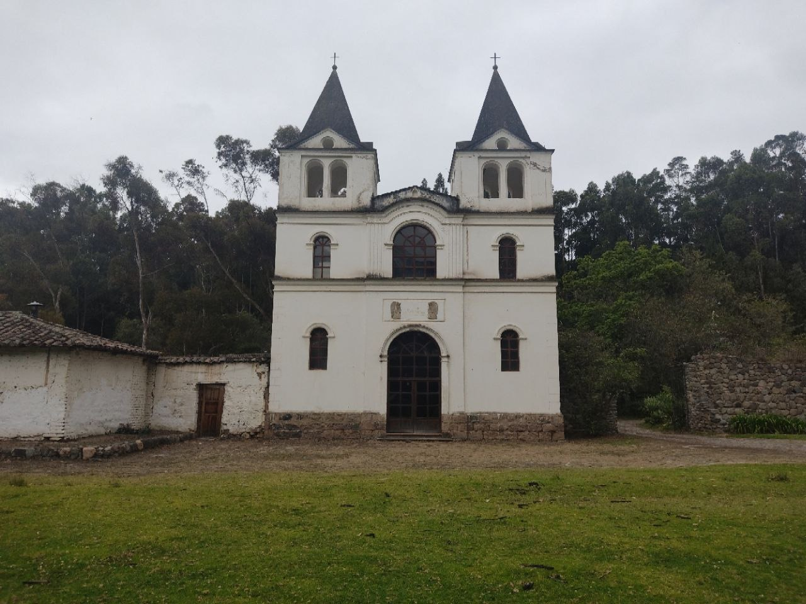
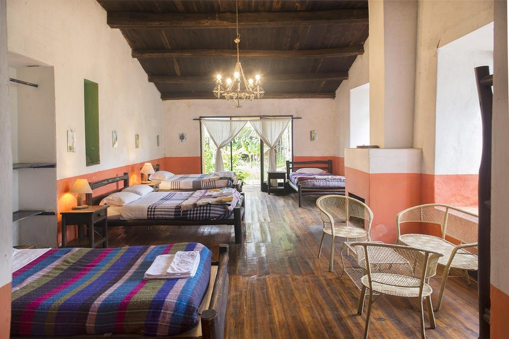
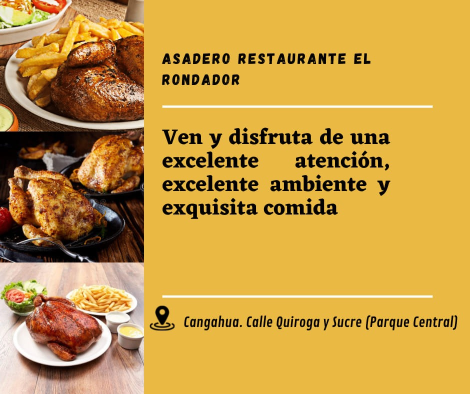
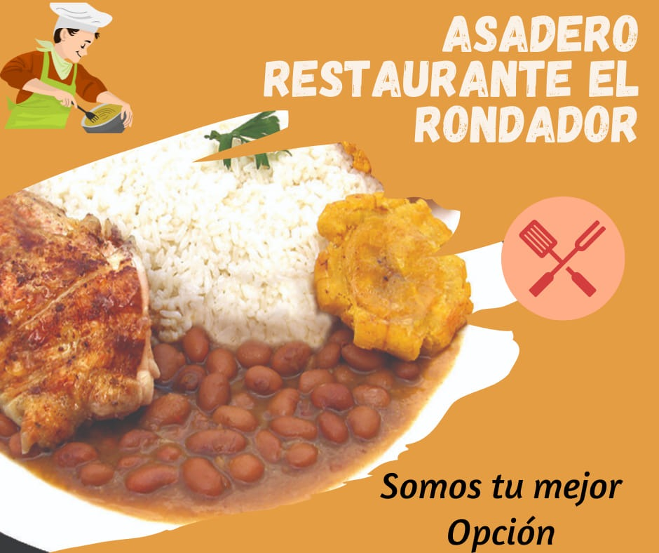
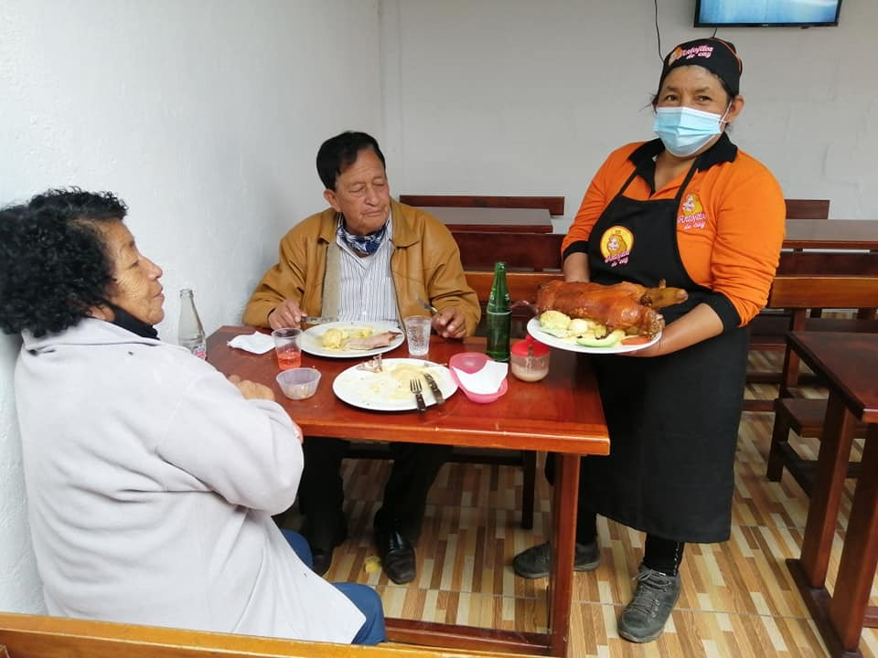

Cangahua Ancestral
Cangahua Ancestral
UBICACION-SERVICIOS TURISTICOS
Alojamiento en la parroquia de Cangahua





Servicios:
Restaurante Mama Rosa servicio de tortillas de chuno.
Habitaciones grandes con chimenea.
Piscina bajo techo.
Granja.
Estanques, jardines y senderos.
Exposición de fotos antiguas del Ecuador.
Área de juegos infantiles.
Sala de uso múltiple con mesa de billar, ping-pong, biblioteca, etc.
Ubicación📍 :Panamericana norte Km 45 A 2 km por la vía principal de ingreso a Cangahua.
Contactos: 0980258726- 0969110019
Asadero restaurante el Rondador



Ofrece:
Caldo de Gallina de campo
Cuy Asado
Aji de Cuy
Papas con queso tierno
Ubicación: Via norte Panamericana en la entrada principal a la parroquia Cangahua
Contactos: 0994111705-0992249414